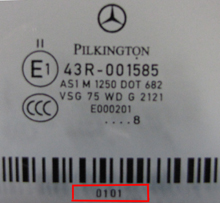

When replacing windshield it is important to teach-in the windshield's version to obtain correct function of rain sensor and thermal camera. This function is used to teach-in the windshield's version to obtain correct function of rain sensor and thermal camera. Configuration should be run after the windshield has been replaced. Windshield type can be read in the bottom right corner of the windshield.
After finished adaptation of the windshield, parametering and adaptation of the windshield should be performed.

Test conditions:
Ignition on, engine off.
Battery voltage above 12V.
No faults in the system.
Procedure:
Start the function.
Select version of windshield, press "OK".
A data list presents teach-in windshield version.
The function is done.
If the adaptation fails, check the test conditions and repair any faults.